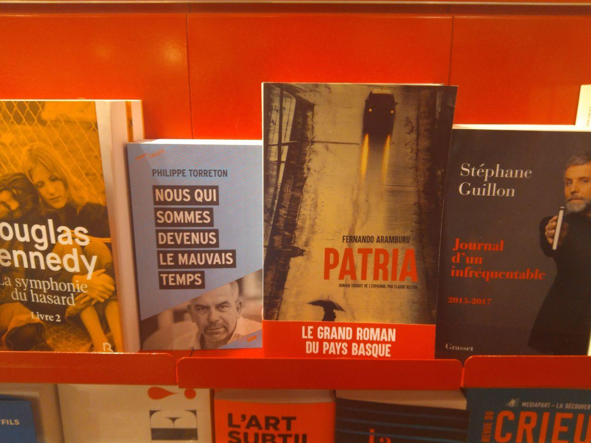

«Le Grand Roman du Pays Basque»

Euskal Herriari buruzko nobela handia espainolez idatzi du Fernando Aramburuk. Pentsatu apur batean, eta zilegi da, zergatik ez? Zilegi da Aramburuk nahi duena nahi duen eran idatzi eta nahi bezala iragartzea. Ez da lehena, ezta azkena izango ere.
Deigarria da, baina, Iban Zalduak igarri bezala Espainolezko narratibaren Euskadi Saritik hasi eta Espainiako Sari Nazionalerainoko sari guztiak jaso dituen nobela euskaraz baino lehenago argitaratu dela frantsesez. Deigarria litzateke horrelakoetara mingarriro ohituak ez bagina. Ez diot ideia ona denik, komertzialki, batez ere, (dagoeneko espainolez irakurri ez duen nork irakurriko luke Patria euskaraz?) baina ez zaio ironiarik falta kontuari. Ez zien ba euskaraz argitaratzeko subentzioei uko egingo Aramburuk?
Martxoaren 16ko Le Monde des Livres gehigarrian orrialde osoko iragarkia (orrialde bakoitian) ordaindu zuen Actes Sud argitaletxeak Patria frantsesduna iragartzeko. Frantziar estatuko liburu-dendetako eta orotariko geltokietako dendetako apaletan dago honezkero liburua, «LE GRAND ROMAN DU PAYS BASQUE» etiketarekin.
Ez dut, egia da, liburua esku artean izan. Euskaraz irakurriko nuke? Ez dakit. Iban Zalduaren kritika bai irakurri nuen eta izan nezakeen interes apurra ase, irakurri gabe ere nobelari buruzko iritzi bat eraikitzeko gakoak jaso. Orrialde osoko iragarkiari begiratu bat eman (nobelaren aurrerapen gisa bi atal ageri dira) eta esan behar dut harritu nauela espainolez, ziur, «el Txato» gisa ageri dena «le Txato» itzuli duela Claude Bletonek («Depuis, il n’y a plus d’ornements sur la tombe du Txato» moduko esaldiak sortuz). Zentzuz egingo zuen itzultzaileak hautua, baina ezin da esan irakurtzerakoan arraroa egiten ez denik.